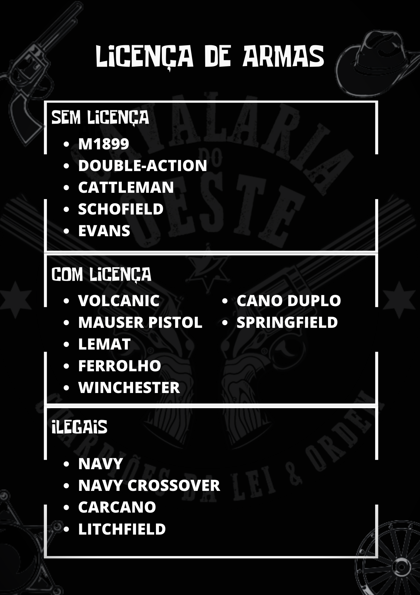

Este Manual tem como objetivo instruir de forma básica um oficial da lei em todas as competências e conhecimentos necessários para atuar pelo Estado do Oeste.
Departamentos de Xerife: Os Departamentos são os órgãos da lei que atuam em pequenas cidades e vilarejos, como Rhodes, Valentine, Annesburg, Strawberry, Armadillo e Tumbleweed.
Atualmente possuímos Departamentos de Xerife ativos apenas em Rhodes, Valentine, Armadillo e Strawberry.
Delegacias de Polícia: As Delegacias são os órgãos responsáveis por manter a lei nas grandes cidades, ou seja, em Saint-Denis e em Blackwater.
Atualmente possuímos Delegacias de Polícia ativos em ambas as cidades.
Os homens da lei são divididos em Delegacias de Polícia e Delegacias de Xerifes organizados com o sistema de patentes, que deve ser visada e respeitada por todos os oficiais, a seguir ilustradas, senão vejamos:
- Recruta/Aspirante: Oficial em período probatório. É constantemente avaliado por seus superiores, e suas obrigações são aprender todos os procedimentos operacionais e acatar todas as ordens de seus superiores da melhor forma possível. O período de análise e aprovação dura entre 5 a 7 dias, mas pode ser estendido (ou adiantado) caso necessário.
Como ser um bom recruta/aspirante?
Seja disciplinado. Apresente-se sempre para seus superiores: “Recruta (seu nome) de (sua jurisdição) se apresentando para o serviço!”.
Demonstre vontade de servir e de aprender. Tire suas dúvidas e se interesse por adquirir o conhecimento que seus superiores podem lhe ceder.
Seja pró-ativo. Caso haja alguma tarefa que necessite ser feita, não aguarde até que uma ordem lhe seja dada, mas peça permissão para fazê-la. Ex.: “Xerife, permissão para agrupar meus colegas em uma equipe de patrulha?”
- Oficial-Júnior / Policial-Júnior: Recruta/Aspirante ainda inexperiente, mas que demonstrou valor suficiente para seus superiores lhe colocarem em um cargo de maior estabilidade. A promoção para Júnior, assim como todas as outras promoções, acarreta em um aumento na responsabilidade do agente da lei e também na cobrança posta sobre ele. As obrigações de Júnior consistem em manter o que lhe foi ensinado em seu período probatório e também ajudar a auxiliar os novos recrutas/aspirantes.
- Oficial/Policial: Homem da lei, conhecedor das leis e dos procedimentos. As obrigações de um oficial/policial consistem basicamente em ter conhecimento de todos os procedimentos padrões da Cavalaria, mesmo que possua pouca ou nenhuma experiência prática. Deve se mostrar também sempre disposto para instruir e orientar os recrutas e juniores.
- Oficial-Sênior / Inspetor: Soldado experiente da lei. O Oficial-Sênior/Inspetor deve ser um braço direito do Xerife/Delegado. As obrigações de um Oficial-Sênior consistem em ter pleno conhecimento de todos os procedimentos operacionais da Cavalaria, e saber conduzi-los. Também consta como obrigação de um Oficial-Sênior/Inspetor auxiliar o Xerife/Delegado na organização do contingente e supervisionar, orientar e instruir os seus oficiais subordinados. Também é válido prestar relatório sobre o desempenho e comportamento dos mesmos para o seu Xerife/Delegado.
- Assistente do Xerife / Subdelegado: Soldado de experiência plena da Cavalaria. Na ausência do Xerife/Delegado, o Assistente/Sub assume tal cargo em sua jurisdição. Deve ser o primeiro ajudante do Xerife/Delegado e, como consequência, lhe prestar auxílio no comando do contingente e em todos os processos que puder.
- Detetives: Divisão investigativa das forças da lei no condado. São organizados entre diretores, detetives e assistentes de detetive. Buscam realizar investigações e interrogatórios, a fim de captar informações e provas sobre organizações criminosas.
- Xerife/Delegado: Maior responsável pela jurisdição; Comandante máximo do contingente daquela jurisdição, e também o maior responsável por ele. Tem a obrigação de recrutar novos oficiais e exonerar aqueles que se desvirtuem do que é esperado de um agente da lei; Exerce a função de líder e professor do seu contingente.
- Texas Ranger: Divisão de elite das forças da lei, responsável por garantir a vitória em conflitos armados com bandidos e criminosos. Também é responsável por fiscalizar a disciplina e auxiliar no treinamento tático e combativo dos soldados da lei de todos os departamentos e delegacias. Devem atuar em patrulha constante, e sempre percorrendo todas as jurisdições.
- Capitão e Superintendente: Primeiros auxiliares do Marshal no comando das forças da lei. O Capitão é responsável por organizar, fiscalizar e prestar suporte aos Departamentos de Xerife, enquanto o Superintendente é responsável pelas Delegacias de Polícia. Ambos estão subordinados somente ao Marshall, e na ausência dele devem comandar a lei no condado.
- Marshall: Líder máximo das forças da lei. É responsável por coordenar e prestar suporte ao trabalho de toda a Cavalaria e Polícia do condado. É também responsável pelas principais decisões dentro do corpo das forças da lei, e tem qualquer poder já atribuído à outra casta desta hierarquia.
O respeito para com os superiores deve prevalecer a todo momento. Todo oficial do condado deve se apresentar para o seu superior e aceitar e seguir suas ordens e comandos.
O respeito para com os civis deve prevalecer a todo momento. Os oficiais da lei existem para proteger e servir a população, e não para impor a sua autoridade perante eles, sempre mantendo boa educação e cordialidade.
O respeito para com os detentos deve prevalecer, por mais que não seja recíproco.
Marshal - Todas as Armas
Capitão e Superintendente - Todas as Armas com exceção de rifle Carcano, escopeta de repetição, escopeta de cano serrado e rifle Rolling Block.
Texas Rangers - Todas as Armas com exceção de rifle Carcano, escopeta de repetição, escopeta de cano serrado e rifle Rolling Block.
Xerife e Delegado - Todas as Armas com exceção de rifle Carcano, escopeta de repetição. escopeta de cano serrado, rifle Rolling Block e revólver Navy Crossover
Detetive - Todas as Armas, portando somente uma arma longa
Oficial-Sênior / Inspetor - Dois revólveres ou pistolas, rifle de ferrolho ou carabina repetidora Winchester ou Cano Duplo
Oficial / Policial - Dois revólveres ou pistolas, rifle de ferrolho ou carabina repetidora Winchester ou Cano Duplo
Oficial-Júnior / Policial-Júnior - Revólver Schofield ou pistola e carabina repetidora Evans ou rifle Springfield
Recruta / Aspirante - Revólver Schofield e carabina repetidora Evans ou rifle Springfield
(Oficiais que desejam usar pistolas, vocês podem comprar diretamente com o Armeiro. Lembrando que só há a possibilidade de usar tal armamento para agentes acima de recruta)

Em nosso dia a dia, encontramos diversas situações e todas elas têm um procedimento a ser seguido. Novamente reforçando, a principal arma do Oficial é a conversa e educação. Nós podemos sim escalar a situação, mas é extremamente importante que isso aconteça quando haja necessidade.
Em perseguições a pé ou a cavalo, o procedimento é este: Caso o indivíduo corra, inicia-se a perseguição dando Voz de PARADA ao indivíduo “Cavalaria”. Caso o mesmo não acate a ordem de parada do Oficias, vocês estão liberados para atacar o Laço no mesmo e amarrá-lo e algemá-lo.
(Máximo 10 bandidos e quantos oficiais estiverem disponíveis)
Ao abordarmos um caso de violação de túmulo, devemos nos identificar como "Cavalaria" e ordenar que o suspeito levante as mãos. Se o suspeito tentar fugir, podemos iniciar uma perseguição a pé ou a cavalo. Após 90 segundos de perseguição, se o suspeito ainda não parar, podemos usar um laço para capturá-lo. É importante destacar que o uso de armas de fogo e armas brancas é estritamente proibido, tanto para os oficiais quanto para os bandidos, com exceção do laço. Se o suspeito ameaçar a vida de qualquer civil ou oficial, é justificado usar a força necessária para cessar a agressão injusta.
(Permitido somente 3 Oficiais e 1 bandido na ação de túmulo)
Ao flagrar uma venda de drogas, deve-se dar voz de prisão imediatamente. Caso o suspeito decida fugir, a perseguição deve começar imediatamente, e após 90 segundos é permitido o uso do laço por parte da cavalaria para capturá-lo. É importante destacar que o uso do laço deve ser feito apenas de maneira próxima, seja arremessando-o próximo ao suspeito, ou então usando a tecla "E" para derrubá-lo enquanto corre, ou ainda a tecla "F" quando o suspeito estiver parado. É estritamente proibido o uso de armas de fogo ou armas brancas, tanto pelos policiais quanto pelos suspeitos. Em caso de resistência, o uso da força deve ser proporcional e justificado.
(Permitido somente 3 Oficiais e 1 bandido no tráfico de drogas)
BISÃO e CARIACU são animais ameaçados de extinção e protegidos por lei, sua caça é ilícita. Qualquer indivíduo flagrado caçando estas espécies, ou portando cortes e/ou partes destes animais deve ser conduzido e preso, recebendo a sentença e a multa descritas na seção PROCEDIMENTO DE PRISÃO.
Negociação de fuga limpa:
Abordagens são procedimentos recorrentes no trabalho de um oficial. Nelas devem ser reproduzidos os valores primordiais mantidos pelas forças da lei do condado: Calma, disciplina e respeito.
Existem algumas práticas de abordagem que são tidas como padrão pelos oficiais, além de dois padrões de abordagem que são facilmente reconhecíveis no dia-a-dia operacional.
Abordagem de rotina: Abordagem pacífica, onde o civil costuma ser colaborativo e não apresenta risco aos oficiais. Deve-se manter uma postura mais cordial e educada, com a intenção de induzir o civil a cooperar com a abordagem e mantê-lo mais à vontade.
Exemplo: Ao abordar o civil, sem a necessidade de apontar armas para o mesmo, diga “Senhor, desça do cavalo com as mãos na cabeça, por gentileza. O Sr. está sendo abordado pela Polícia de Blackwater, peço que colabore com a abordagem!”.
Abordagem de suspeita: Abordagem rígida, onde o meliante é autuado em flagrante ou apresenta risco de vida à oficiais e/ou civis. Os oficiais devem manter alerta máximo para qualquer reação agressiva ou evasiva do abordado. As ordens ao civil devem ser claras e sucintas.
Exemplo: Ao abordar um meliante procurado pela lei, deve-se apontar as armas para o mesmo e proferir “É a Cavalaria, ponha as mãos na cabeça!”.
Práticas de abordagem: Em caso de abordagem durante patrulha todos os garupas devem descer dos cavalos. Durante uma abordagem, apenas o líder da equipe dá ordens aos abordados, enquanto os demais oficiais se mantém atentos ao perímetro e a possíveis reações agressivas ou evasivas do abordado

Início de patrulha: “/co 4 oficiais de BW iniciando patrulhamento externo pelo pasto dos bisões”
Realização de tocaia: Ex.: “/co Cavalaria de SD realizando tocaia em Riggs Station”
Reagrupamento: Ex.: “/co Cavalaria de VL retornando ao xerifado”
Um oficial acabou de entrar em serviço na sua jurisdição e seu contingente está em patrulhamento: “/co Fulaninho, reagrupe conosco em Bolder Blade para patrulhamento”
(Para mais informações sobre a ferramenta /co vide a seção COMUNICAÇÃO EM POMBO CORREIO)
Temos 4 estados onde a cavalaria do oeste atua, sendo eles: Lemoyne, New Hanover, West Elizabeth e New Austin.
O procedimento de prisão deverá ser realizado da seguinte maneira:
(Ressalta-se que as penas de roubos em geral não serão cumulativas, como por exemplo, a pena de roubo a loja não será cumulada com a tentativa de homicídio, deverá ser aplicada sempre a maior multa, o maior crime absorve o crime menor)
(A ferramenta /co é imprescindível para a organização e comunicação da cavalaria, apenas a use em casos necessários e NUNCA para assuntos externos a cavalaria)
Modelo a ser seguido após ser finalizada a ação.
N° Relatório: (Jurisdição e numeração)
Data: (Data da ação)
Integrantes: (Todos os membros participantes)
Qta. Assaltantes: (Quantidade de bandidos na ação)
Local: (Local da ação)
Resultado: (Vitória ou derrota)
Modelo a ser seguido nos finais de patrulhamento.
Data:
Horário de início:
Horário de término:
Local:
Oficiais:
Relatório: (Deve ser descrito todo o contexto da patrulha, contendo o máximo de informações possíveis.)
Todo produto ilegal encontrado no mercado de cada cidade, deve ser enviado seguindo o modelo abaixo.
Identificação: (Jurisdição e Numeração)
Nome: (Nome do responsável pela venda)
Item: (Nome do produto)
Local: (Cidade em que está sendo vendido)
Todo boletim de ocorrência deve ter o modelo abaixo.
N° Boletim: (Jurisdição e numeração)
Nome: (Nome de todos os envolvidos)
N° Postal: (Numero do pombo)
Residência: (Local de residência do depoente)
Estado Civil:
Trabalho:
Ocorrência: (Descrição de todo o acontecimento)
Pertences Subtraídos:
Imagem da identidade:
Modelo a ser seguido para a liberação do porte.
Nome: Mantô
Número da identidade: (Caso seja nativo utilizar “S/N - NATIVO”)
Número do pombo:
Armamento: Todas
Customização (sim ou Não): Sim
Oficial: Dutch Daniel
Data de Pagamento:
Valor pago: Espécime de 150 Dólar / Cobrança de 150 Dólar
Toda a solicitação feita, deve aguardar a autorização do Marshall para ser entregue. Modelo a ser seguido para a liberação da placa.
Nome: Marcio Silva
Número da identidade: D852A472
Número do pombo: 1
Armamento: (Permitido somente 3 placas por semana)
Oficial: Marco Drummond
Data da solicitação:
Modelo de relatório para ser seguido nas apreensões.
Nº Prisão: (Jurisdição e numeração)
N° Dossier: (Numeração do dossier)
Nome do Acusado: (Nome do acusado)
Relato: (Motivo da apreensão)
Itens: (Objetos/produtos apreendidos)
Anexar foto dos pertences abaixo.
Modelo de relatório para ser seguido nas prisões.
Nº Prisão:
N° Dossier:
Nome do Acusado:
Relato:
Anexar foto abaixo do dossier.